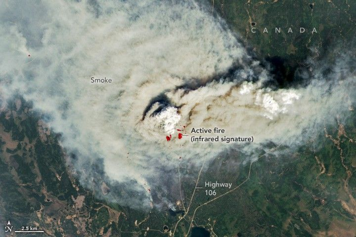

A Smoky Start to Saskatchewan’s Fire Season
Wildland fires usually begin to appear in Saskatchewan in April and May as snow melts and landscapes dry out. In mid-May 2025, however, moderate drought and strong winds exacerbated fires in the central part of the province.
The OLI‑2 (Operational Land Imager‑2) on Landsat 9 captured this image (above) of smoke billowing from the Shoe fire on May 10, 2025. A wider view of the same image (below) also shows smoke from the Camp fire. The fires were burning in boreal forests in and around Narrow Hills Provincial Park. Infrared data from Landsat were overlaid on the image to help distinguish the heat signature of active fires.
On May 12, 2025, Saskatchewan’s public safety agency reported 12 active fires across the province, half of which were contained. The park and all highways into and out of it were closed due to the fires, and officials issued several air quality alerts for the region. Saskatchewan officials have tallied 146 fires to date in 2025, nearly twice the five-year average.
Fire activity has been intense enough to produce at least one towering chimney of smoke known as a pyrocumulonimbus (pyroCb) cloud. Researchers at the Cooperative Institute for Meteorological Satellite Studies at the University of Wisconsin–Madison confirmed the formation of the cloud in the Camp fire’s plume on May 8.
A wider view of the same image at the top of the page also shows a smoke plume from a second fire about 30 kilometers to the south. Areas where the forest has burned appear dark brown.
These fire-generated clouds are associated with extreme fire behavior that can hinder firefighting efforts and threaten communities. They can also inject large plumes of smoke into the stratosphere, where they can linger for several months, alter stratospheric circulation, and influence Earth’s radiative balance and the Antarctic ozone hole. Cloud top infrared brightness temperatures at the time of the Landsat image were not cool enough for the plume to qualify as a pyroCb, although the image does show signs of pyrocumulus (pyroCu) activity on May 10.